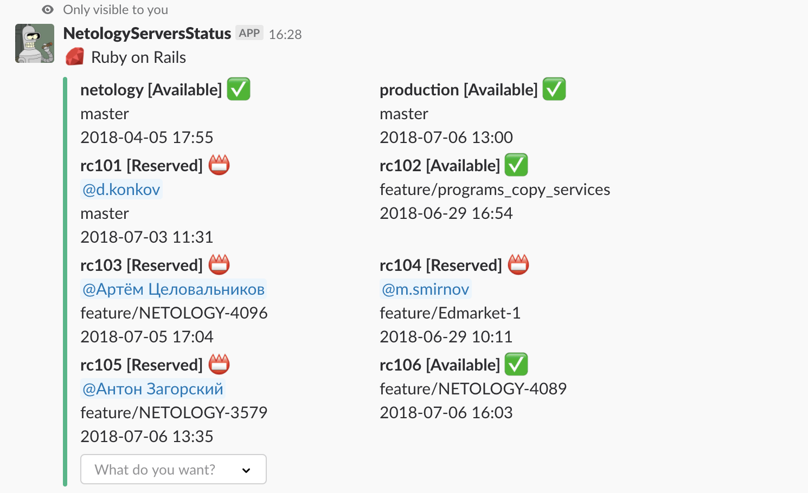
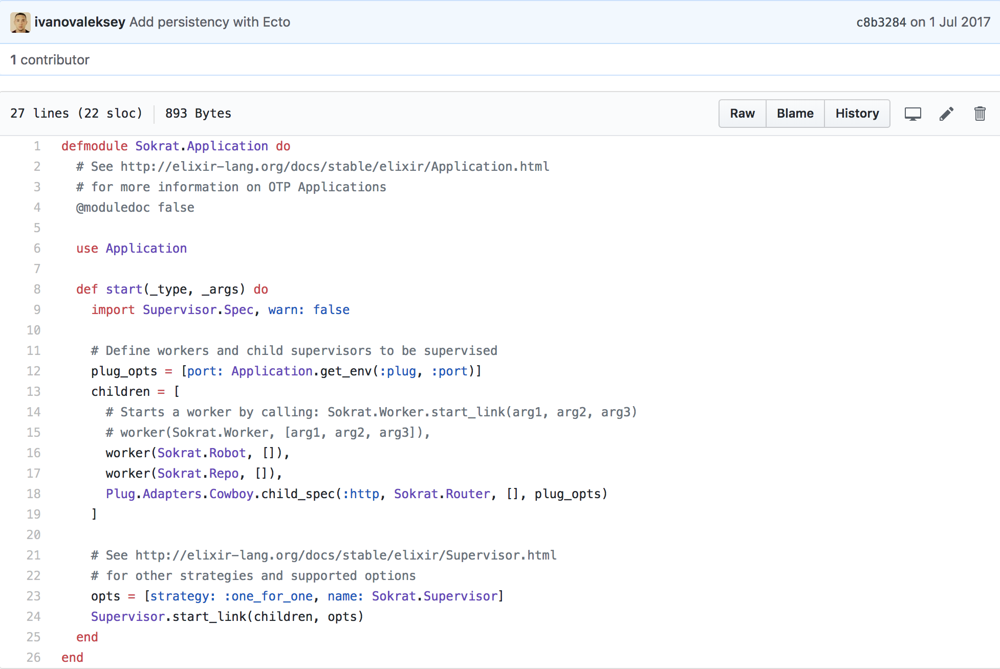
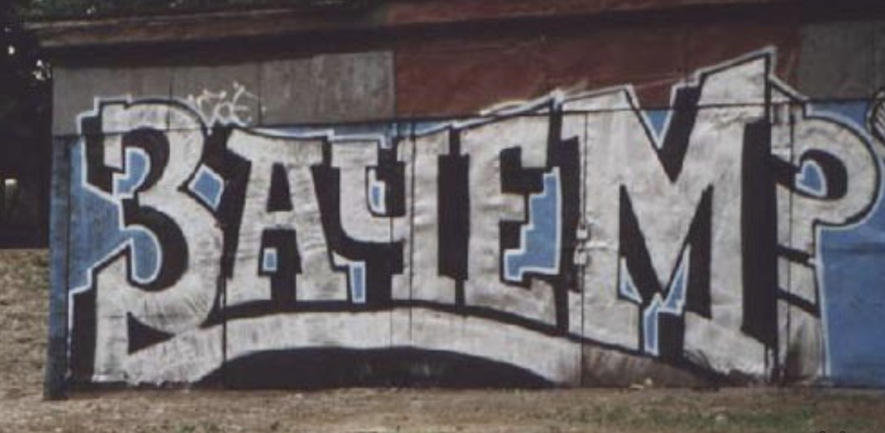
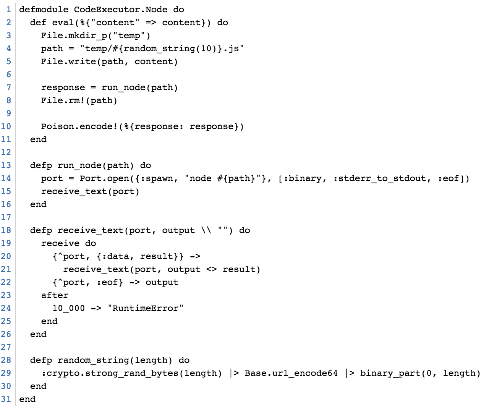

Алексей Иванов (автор), Паша Комягин и я за несколько вечеров написали минимальную систему бронирования

* В Фоксфорде сейчас более совершенная система деплоя, которая не предполагает ручного бронирования
Что мы взяли:

Как видно из кода тут:
Hedwig-based робот (слушает события слака и может реагировать на эти события через механизм респондеров - см. документацию hedwig),
Ecto для удобного управления стейтом в БД (кто что забронировал),
Plug-based роутер чтобы отвечать на ( слеш-команды слака , а также чтобы управлять контентом БД)
Сейчас мы смотрим на систему сверху (проектирование сверху внизу). Любой новый для вас прооект стоит смотреть, начиная с точки входа, а дальше пытаться разобраться в деталях (где-то это файл main.cpp, где-то Makefile, в данном случае это аппликейшн файл)
В чем профит от таких поделок?
Борьба за время, меньше времени тратится на бесполезные вещи
В свободное от работы время можно совместить приятное с полезным (взять и изучить что-то новое с пользой для компании где ты работаешь и для коллег)
Такие задачи хороши для молодых разработчиков
Elixir хорошо работает когда нужно спроектировать несколько независимых контуров управления
Ооочень маленький сервис c оочень маленьким рантаймом, который исполняет код ( ЭЛИКСИР + использование механизма портов ( Port ), который идет в стандартной библиотеке)
Можно поднимать контейнеры динамически по запросу, но для прототипа дешевле держать фиксированный пулл действительно маленьких сервисов.
Хранилище стейта, ansible для сетапа, docker swarm из-за того что нужно скалирование + это проще чем k8s (для прототипов отлично)
Ну и зачем же вы притащили эликсир?

Ну и зачем же вы притащили эликсир?
Механизм портов предоставляет возможность писать меньше кода при работе с созависимыми процессами
Маленький рантайм позволяет сделать контейнер приложения минимального размера (взяли alpine linux)
Докер сворм позволяет заскейлить выполнение кода независимо от основного приложения (возможен мультинодовый сетап с абстракцией над сетью c рескейлингом на лету)
Есть пространство для маневра и расширения приложения для других рантаймов (отдельный контейнер для JS, отдельный для Ruby, отдельный для Python и тд)
Мини-тренажер. Суть

Композиция из Ruby и Elixir
Руби дешевле использовать для массовых вещей ( Convention over configuration , взаимозаменяемость разработчиков на рельсах)
Одно из главных достоинств Erlang/Elixir и BEAM - легкий рантайм и actor-based модель параллельных вычислений
Зная сильные и слабые стороны языков программирования мы получаем масштабируемый и гибкий инструмент
Конструктор лендингов
Akira Matsuda на одном из рэилс клабов сказал:
Если библиотека подходит на 100%, то ее можно взять
Если не подходит на 100%, то сделай форк
Если не подходит и не можешь сделать форк, то сделай свою
В случае с конструктором лендингов нам было дешевле сделать свое
Конструктор лендингов. Готовим
Берем JSON, кладем в БД (на самом деле там два поля с JSON, незапаблишенный JSON и запаблишенный)
Наворачиваем поверх этого стейт-машину (логика паблишинга/предпросмотра/режима редактирования)
Исключаем бекенд из цепочки взаимодействия Маркетинг-Дизайн-Фронтенд